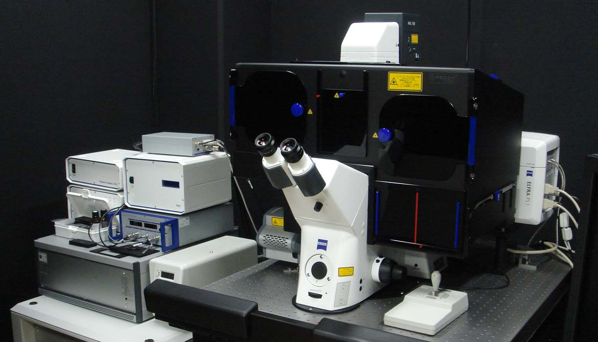

本領域を構成する作動エレメント同定ユニットと生命現象解析ユニットの連携によって、様々なncRNA作動装置複合体が同定される事が予測されます。本領域の総括班では、最新の超解像顕微鏡を共用機器として設置し、ncRNA作動装置複合体の局在や動態の精密観察を支援いたします。

超解像顕微鏡とは、光学顕微鏡の理論限界値(平面方向約200nm)を超えた分解能での蛍光観察を可能にする顕微鏡です。これまでにない超高解像度観察を可能にするこの技術は、2014年のノーベル化学賞に輝きました。本領域の超解像顕微鏡（Carl Zeiss社製ELYRA PS.1）はSIM及びPALMと呼ばれる2つの超解像システムを搭載しています。SIMは構造化照明と呼ばれる特殊な照明を使用しており、平面方向約100nmの分解能での蛍光観察が可能です。解像度はPALMに劣りますが、SIMには観察用サンプルの作成が簡便という利点があります（通常の蛍光観察用サンプルをそのまま使用可能）。一方、PALMはLocalization法と呼ばれる手法を用いることで、平面方向約20nmの圧倒的な分解能を実現します。PALMは全反射顕微鏡の原理を利用しているため、カバーガラスから約100nm（垂直方向）までしか観察できないという制限がありました。ですが、本領域のPALMは日本初の導入となる3D-PALMと呼ばれる最新型で、培養細胞の核付近まで超高解像度観察が可能です。ただし、PALMには特殊な蛍光プローブや専用のバッファーが必要になるという欠点もあります。
本機器の共用によって、各ユニット間の共同研究をさらに活性化させると共に、これまで古典的なRNA研究では不足しがちであった細胞生物学視点を領域全体で共有し、分子レベル、細胞レベル、個体レベルを包含した骨太なRNAネオタクソノミ研究を展開する事が出来ると期待されます。また、超解像度顕微鏡を用いたRNA作動装置の細胞内挙動解析については、班員に向けた講習会を実施し、技術の利用とそれに基づく領域内の連携を積極的に推進します。
本領域の超解像顕微鏡に関するお問い合わせは、領域事務局までお願いいたします。